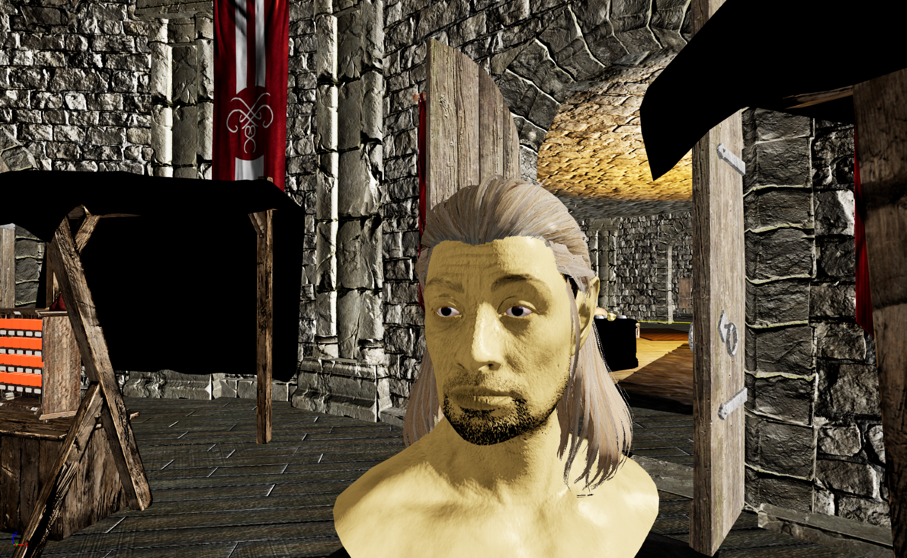

Kadian

Learns quickly and ancient by lineage, the Kadians are the oldest civilization in the Empire. They see themselves as the rightful heirs of order, believing their existence is the result of the gods’ triumph over chaos. Their province is ruled by kings and built in stone, set among dry fields and fortified cities. Over centuries they have both conquered and freed other peoples, leaving a complicated legacy. Much of modern life traces back to Kadian invention: irrigation, chimneys, roads, the court system, the first legal code of laws and consequences, and the modern concept of time in the form of the sundial.
Ancestry: Elves
Quick Jump
Homelands
Base Attributes
Base Attributes
| Strength | 35 |
|---|---|
| Intelligence | 50 |
| Willpower | 50 |
| Speed | 30 |
| Endurance | 40 |
| Personality | 25 |
| Luck | 50 |
Skill Bonuses
Skill Bonuses
| Alteration | 10 |
|---|---|
| Conjuration | 10 |
| Destruction | 10 |
| Enchanting | 5 |
| Illusion | 5 |
| Restoration | 5 |
| Short Blade | 5 |
| Staff | 10 |
| Wand | 5 |
Resistences
- Magic Effectiveness +25%
Other
- Magic bonus of 100 points